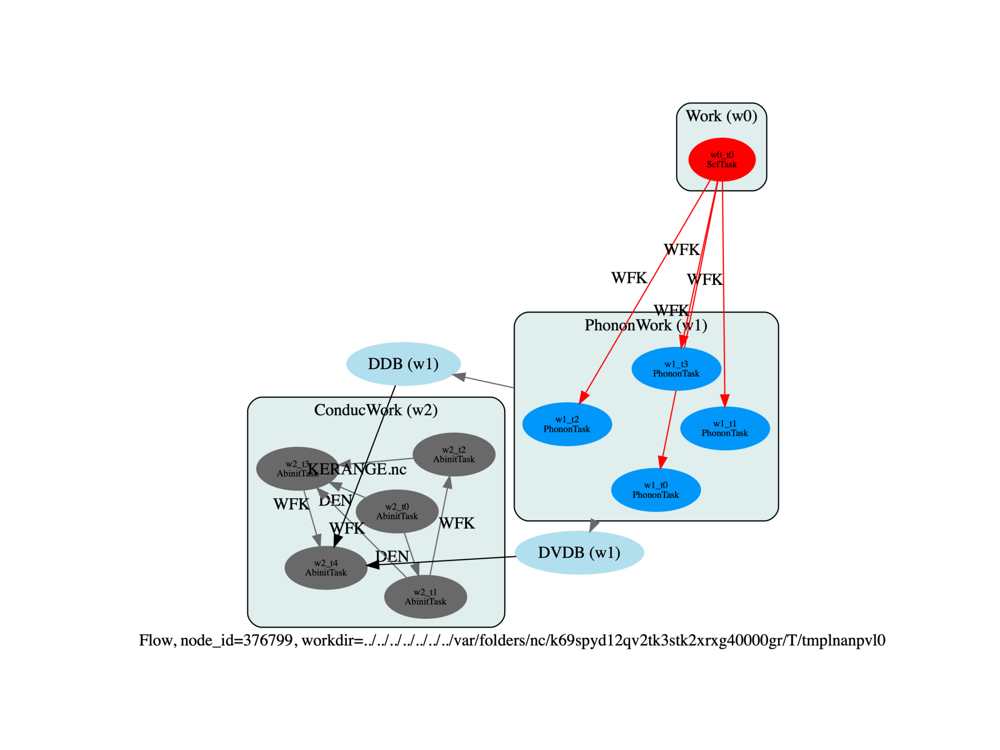

Note
Click here to download the full example code
Effective masses with finite difference¶
Flow to compute effective masses with finite difference method. Derivatives are computed along lines in k-space.
import os
import sys
import abipy.data as abidata
import abipy.abilab as abilab
from abipy import flowtk
from abipy.abio.factories import conduc_kerange_from_inputs
def make_scf_input(structure, pseudos, ngkpt=(2,2,2), shiftk=(0,0,0),
**variables):
"""Build and return SCF input given the structure and pseudopotentials"""
scf_inp = abilab.AbinitInput(structure, pseudos=pseudos)
# Global variables
scf_inp.set_vars(**variables)
# Dataset 1 (GS run)
scf_inp.set_kmesh(ngkpt=ngkpt, shiftk=shiftk)
#scf_inp.set_vars(toldfe=1e-10)
return scf_inp
def make_nscf_input(structure, pseudos, ngkpt=(2,2,2), shiftk=(0,0,0),
**variables):
"""Build and return NSCF input given the structure and pseudopotentials"""
scf_inp = abilab.AbinitInput(structure, pseudos=pseudos)
# Global variables
scf_inp.set_vars(**variables)
# Dataset 1 (GS run)
scf_inp.set_kmesh(ngkpt=ngkpt, shiftk=shiftk)
scf_inp.set_vars(iscf=-2)
return scf_inp
def build_flow(options):
# Working directory (default is the name of the script with '.py' removed and "run_" replaced by "flow_")
if not options.workdir:
options.workdir = os.path.basename(__file__).replace(".py", "").replace("run_", "flow_")
# Get structure and pseudos from the abipy database
structure = abidata.structure_from_ucell("Al")
pseudos = abidata.pseudos("13al.pspnc")
# Variables
variables = dict(
ecut=20,
tsmear=0.05,
nband=12,
nbdbuf=2,
occopt=3,
iomode=1,
nstep=20)
ngkpt = [4, 4, 4]
ngkpt_fine = [8, 8, 8]
shiftk = [0.0, 0.0, 0.0]
ngqpt = [2, 2, 2]
tmesh = [0, 30, 11] # Conductivity at temp from 0K to 300K by increment of 30
boxcutmin = 1.1
mixprec = 1
#Kerange Variables
nbr_proc = 4
ngqpt_fine = [16, 16, 16] # The sigma_ngkpt grid must be divisible by the qpt grid
sigma_ngkpt = [16, 16, 16]
einterp = [1, 5, 0, 0] # Star functions Interpolation
sigma_erange = [-0.3, -0.3, "eV"] # Negative value for metals
# Nom de mon flow
flow = flowtk.Flow(workdir=options.workdir)
# Create inputs Object
scf_input = make_scf_input(structure, pseudos,
tolvrs=1e-12,
ngkpt=ngkpt,
shiftk=shiftk,
**variables)
nscf_input = make_nscf_input(structure, pseudos,
tolwfr=1e-18,
ngkpt=ngkpt_fine,
shiftk=shiftk,
**variables)
# Create Work Object
# Work 0: SCF run
gs_work = flowtk.Work()
gs_work.register_scf_task(scf_input)
flow.register_work(gs_work)
# Work 1: Compute DDB et DVDB
ph_work = flowtk.PhononWork.from_scf_task(gs_work[0],
qpoints=ngqpt, is_ngqpt=True,
tolerance={"tolvrs": 1e-8})
flow.register_work(ph_work)
# Work 2: Conduc with Kerange
multi = conduc_kerange_from_inputs(scf_input=scf_input,
nscf_input=nscf_input,
tmesh=tmesh,
ddb_ngqpt=ngqpt,
eph_ngqpt_fine=ngqpt_fine,
sigma_ngkpt=sigma_ngkpt,
sigma_erange=sigma_erange,
einterp=einterp,
boxcutmin=boxcutmin, # 1.1 is the default value of the function
mixprec=mixprec # 1 is the default value of the function
)
# Here we can change multi to change the variable of a particular dataset
conduc_work = flowtk.ConducWork.from_phwork(phwork=ph_work, # Linking the DDB and DVDB via a |PhononWork|
multi=multi, # The multidataset object
nbr_proc=nbr_proc, # Needed to parallelize the calculation
flow=flow,
with_kerange=True, # Using Kerange
omp_nbr_thread=1) # 1 is the default value of the function
# If you already have the DDB and DVDB, use from_filepath(ddb_path, dvdb_path, multi, ...) instead of from_phwork
flow.register_work(conduc_work)
return flow.allocate(use_smartio=True)
# This block generates the thumbnails in the Abipy gallery.
# You can safely REMOVE this part if you are using this script for production runs.
if os.getenv("READTHEDOCS", False):
__name__ = None
import tempfile
options = flowtk.build_flow_main_parser().parse_args(["-w", tempfile.mkdtemp()])
build_flow(options).graphviz_imshow()
@flowtk.flow_main
def main(options):
"""
This is our main function that will be invoked by the script.
flow_main is a decorator implementing the command line interface.
Command line args are stored in `options`.
"""
return build_flow(options)
if __name__ == "__main__":
sys.exit(main())
Total running time of the script: ( 0 minutes 2.010 seconds)